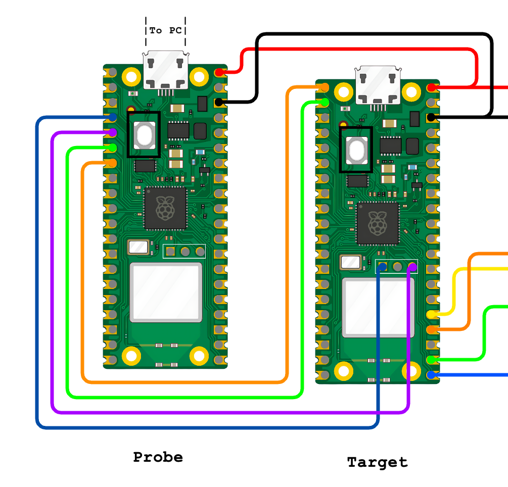

Doggie RP2040
Description
This implementation provides the hardware abstraction for Doggie and evilDoggie to run in the Raspberry Pi Pico RP2040 microcontroller family.
Supported Configurations
Doggie
The RP2040 implementation supports the following configurations.
- USB and MCP2515 (SPI to CAN)
- UART and MCP2515 (SPI to CAN)
For a detailed documentation refer to the Doggie on RP2040 documentation
evilDoggie
The ESP32 implementation supports only one configuration.
For a detailed documentation refer to the evilDoggie on RP2040 documentation
How to Flash a Release
-
USB and MCP2515:
- Download the release
doggie_pico_usb_mcp.uf2. - Connect the Pico in bootloader mode and copy the release.
- Download the release
-
UART and MCP2515:
- Download the release
doggie_pico_uart_mcp.uf2. - Connect the Pico in bootloader mode and copy the release.
- Download the release
How to Compile and Flash
Prerequisites
-
Install Rust and cargo with support for ARM architecture. Follow the installation instructions from the official Rust website.
-
Add the target architecture:
rustup target add thumbv6m-none-eabi -
To program a Pico, you can put it in bootloader mode and copy the firmware or use another Pico as a probe.
-
If you want to program your Pico by copying the firmware, install
elf2uf2-rs:cargo install elf2uf2-rs -
If you want to program your Pico using another Pico as a probe, install
probe-rs:curl --proto '=https' --tlsv1.2 -LsSf https://github.com/probe-rs/probe-rs/releases/latest/download/probe-rs-tools-installer.sh | sh
-
Additionally, you have to modify doggie_pico/.cargo/config.toml:
[target.'cfg(all(target_arch = "arm", target_os = "none"))']
# runner = "elf2uf2-rs -d" # Program by copying firmware
runner = "probe-rs run --chip RP2040" # Program with another Pico
[build]
target = "thumbv6m-none-eabi" # Cortex-M0 and Cortex-M0+
[env]
DEFMT_LOG = "trace"
And setup a Pico as a probe by cloning the RPI debug probe repo, building it for the pico:
git clone https://github.com/raspberrypi/debugprobe.git
cd debugprobe
mkdir build
cd build
cmake -DDEBUG_ON_PICO=ON ..
make
Copying the resulting .uf2 image to the probe Pico, and connecting it to the target Pico.
Connections:
| Function | Pico Probe | Target Probe |
|---|---|---|
| Vcc | VBUS | VBUS |
| GND | GND | GND |
| SWCLK | GP2 | SWCLK |
| SWDIO | GP3 | SWDIO |
| UART -> | GP4 | GP1 |
| UART <- | GP5 | GP0 |

Compile and Flash the Firmware:
-
Connect the target Pico to the PC in bootloader mode or to the probe as shown before.
-
Then we need to select the desired project with the
--binflag:doggieevil_doggie
-
And then we flash with:
DEFMT_LOG=off cargo run --release --bin {BIN} --disable-default-features --features {FEATURES}